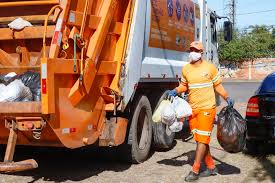

Lixo Domiciliar: O que caracteriza esse tipo de resíduo?
O lixo domiciliar é tudo aquilo que é produzido nas residências pelos humanos. como restos de alimentos, vidros quebrados, alumínios, plástico, papéis, fezes de animais. Por ser um lixo que mistura diversos lixos é difícil assegurar que 100% do lixo seja devidamente separado e reciclado, mas ainda assim é importante que haja reciclagem da grande parte desses resíduos. O lixo domiciliar tem coleta seletiva de lixo geralmente em alguns dias da semana. dependendo da região.
Caminhões de coleta passam nas ruas e recolhem os sacos de lixos deixados pelas pessoas, mas esse lixo que é recolhido é dilacerado pelo caminhão e seu destino são aterros sanitários. Esses aterros sanitários tem vida útil, e mesmo realizando uma preparação do solo, esses aterros poluem o ar pela emissão de gases produzidos, o solo e podem atingir os lençóis freáticos contaminando assim a água.
Qual a importância de descartar o lixo domiciliar de maneira correta?
Dados do Panorama dos Resíduos Sólidos no Brasil 2020, a geração saiu de 66,7 milhões de toneladas em 2010 para 79,1 milhões em 2019, uma diferença de 12,4 milhões de toneladas. O mesmo estudo diz ainda que cada brasileiro produz, em média, 379,2 kg de lixo por ano, o que corresponde a mais de 1 kg por dia. (dados retirados do toda matéria Brasil)
Esses resíduos demoram muito tempo para se decompor, como vidros e plastico, por isso a melhor maneira de descartar o lixo doméstico é reciclando os resíduos que são produzidos e que podem ser descartado, como embalagens e restos de comida. alguns lixos não tem como reciclar como papel higiênico. Assim é a melhor forma de garantir que não haja tanta poluição e que o lixo domiciliar tera um fim adequado.
